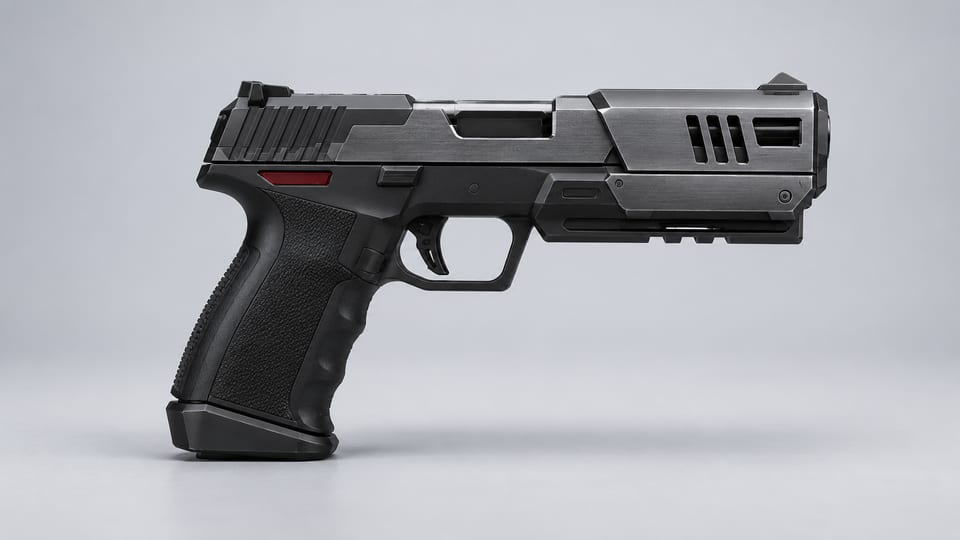
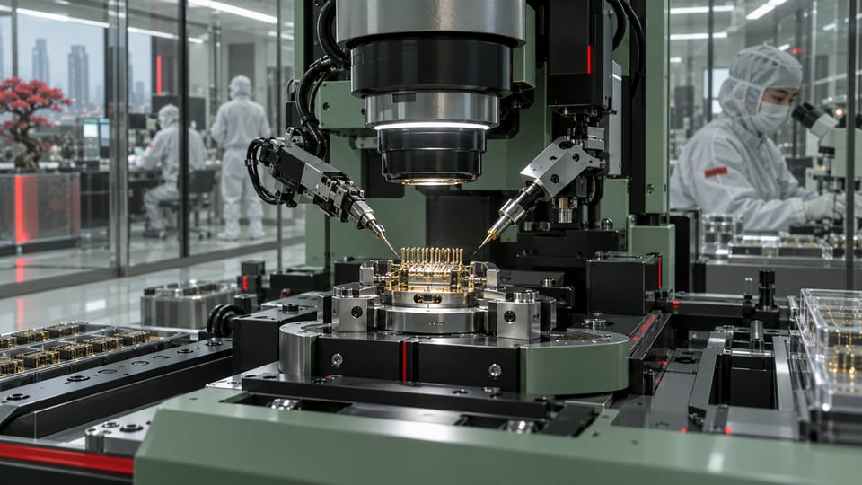

スマート照準
対応する照準接続環境と連携する、スマート兵器の一つ。



ユキムラは、アラサカのスマート兵器技術を小型ピストルへ展開します。その工業的形状とスマートリンク接続は、防衛製品群におけるシンゲンの対応機種を形づくります。
対応する照準接続環境と連携する、スマート兵器の一つ。
シンゲンのサブマシンガン構成とは異なる、小型形式。
グループの防衛事業における、製品開発、接続設計、精密製造。
ユキムラのピストル形式は、同じスマート兵器群に属するシンゲンのサブマシンガンを補完します。
異なる製品形式にも、共通の製造規律が息づきます。各製品の個性を明確にしながら、より広い警備事業とのつながりを保ちます。
ポートフォリオ

アラサカの内側
HJKE-11ユキムラはスマート兵器をピストル形式に展開します。製品群における役割は、小型サブマシンガンであるシンゲンと異なります。これは単独のカタログ項目ではなく、製造組織に属する製品です。地域流通、専門装備との関係、対応する接続環境が運用の文脈を与えます。
シンゲン